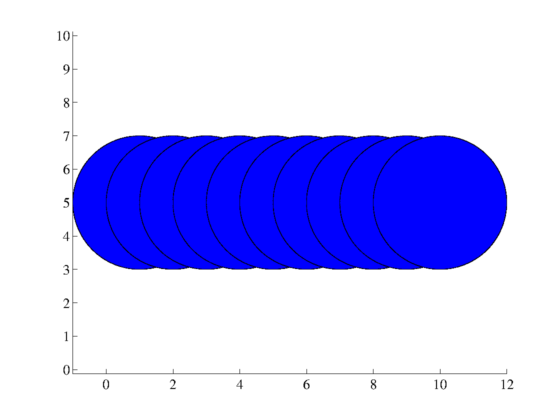
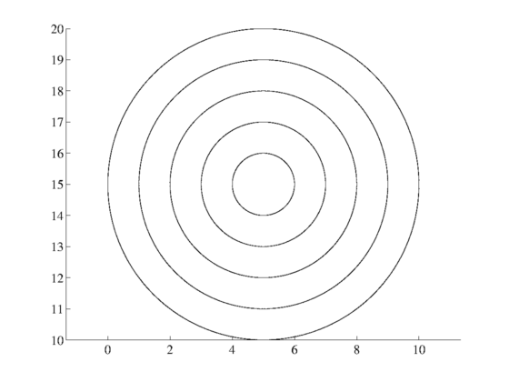
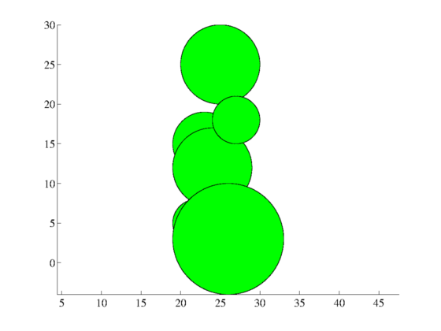
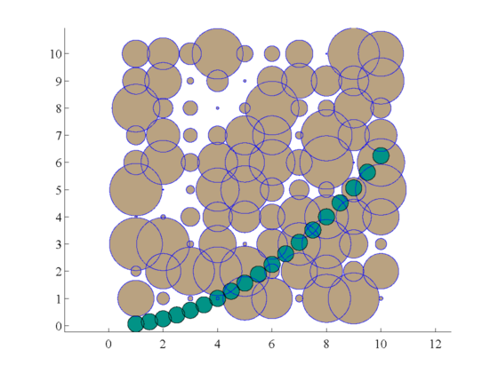
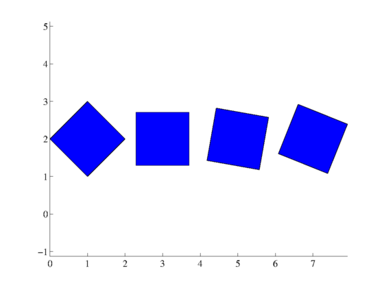

circles
This function plots circles.
Contents
Syntax
circles(x,y,r) circles(...,'vertices',numberOfPoints) circles(...,'rotation',degreesRotation) circles(...,'ColorProperty',ColorValue) circles(...,'LineProperty',LineValue) h = circles(...)
Description
circles(x,y,r) plots circle(s) of radius or radii r centered at points given by x and y. Inputs x, y, and r may be any combination of scalar, vector, or 2D matrix, but dimensions of all nonscalar inputs must agree.
circles(...,'vertices',numberOfPoints) allows specification of how many points to use for the outline of each circle. Default value is 1000, but this may be increased to increase plotting resolution. Or you may specify a small number (e.g. 4 to plot a square, 5 to plot a pentagon, etc.).
circles(...,'rotation',degreesRotation) rotates the shape by a given degreesRotation, which can be a scalar or a matrix. This is useless for circles, but may be desired for polygons with a discernible number of corner points.
circles(...,'ColorProperty',ColorValue) allows declaration of 'facecolor' or 'facealpha' as name-value pairs. Try declaring any fill property as name-value pairs.
circles(...,'LineProperty',LineValue) allows declaration of 'edgecolor', 'linewidth', etc.
h = circles(...) returns the handle(s) h of the plotted object(s).
Example: One circle
Here we draw one circle of radius 3, centered at the location (5,10). Note that Matlab doesn't set axes equal by default, so circles may not look like circles until you declare axis equal.
circles(5,10,3)
axis equal

Example: A line of equally-sized circles
Draw ten circles of radius 2 at y = 5:
cla % clears away the circles drawn in the first example
circles(1:10,5,2)
 Example: Hollow or empty circles
Let's make them concentric, too:
cla circles(5,15,1:5,'facecolor','none')
Example: Green circles of multiple radii
Here we declare multiple radii of circles
x = 22:27; y = [5,15,12,25,3,18]; r = [3 4 5 5 7 3]; cla circles(x,y,r,'facecolor','green')
Example: Declare edge color and width
Use patch or fill properties to format your circle(s):
cla circles(5,10,3,'edgecolor',[.5 .2 .9],'linewidth',4)

Example: A grid of circles
Perhaps your circles correspond to some gridded data set such as latitudes and longitudes:
cla lat = repmat((10:-1:1)',1,10); lon = repmat(1:10,10,1); r = rand(size(lat)); circles(lon,lat,r,'edgecolor','b','facecolor',[0.7255 0.6353 0.5059]);

Overlay a parabolic line of semitransparent circles:
x = 1:.5:10; y = (x/4).^2; circles(x,y,.3,'edgecolor','k','facecolor',[0.0078 0.5765 0.5255],... 'facealpha',.4);
Example: Circles have corners
This script approximates circles as polygons with 1000 vertices. If all those corners are too complex for your Pentium-II, you can reduce the number of points used to make each circle. If 1000 points is not high enough resolution, you can increase the number of points. Or if you'd like to draw triangles or squares, or pentagons, you can significantly reduce the number of points. Let's try drawing a stop sign:
cla h = circles(1,1,10,'vertices',8,'color','red');

We see that our stop sign needs to be rotated a little bit, so we'll delete the one we drew and try again:
delete(h) h = circles(1,1,10,'vertices',8,'color','red','rot',45/2); text(1,1,'STOP','fontname','helvetica CY',... 'horizontalalignment','center','fontsize',140,... 'color','w','fontweight','bold')

Example: Rotation can be scalar or matrix
Plot some squares declaring arbitrary rotation corresponding to each square:
cla circles([1 3 5 7],2,1,'vertices',4,'rot',[0 45 35 23.1])
Author Info
These functions were written by Chad A. Greene of the University of Texas at Austin's Institute for Geophysics (UTIG) in March of 2014 and updated in August 2014. All previous functionality is still supported with the updates, but the code is nominally more efficient now and the rotation feature has been added.